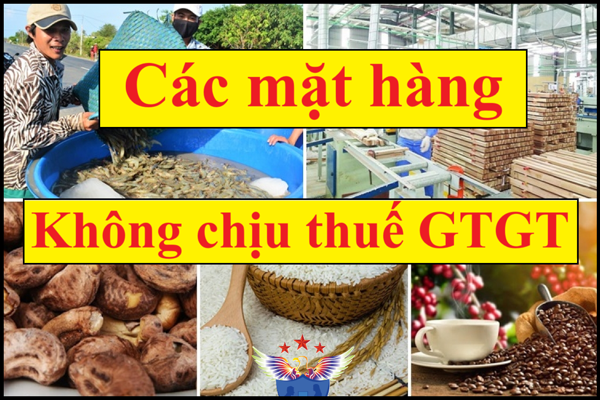

Những đối tượng không chịu thuế GTGT theo quy định mới nhất năm 2026 tại Luật Thuế GTGT số: 48/2024/QH15 và Nghị định 181/2025/NĐ-CP có hiệu lực từ ngày 01/07/2025
Trước ngày 01/07/2025 CÁC ĐỐI TƯỢNG KHÔNG CHỊU THUẾ GTGT được quy định tại điều 5 của luật thuế GTGT 2008 và được hướng dẫn tại điều 4 Thông tư 219/2013/TT-BTC đã được sửa đổi, bổ sung theo Thông tư 26/2015/TT-BTC, Thông tư 130/2016/TT-BTC, Thông tư 25/2018/TT-BTC...
Nhưng kể từ ngày 01/7/2025 khi luật thuế GTGT số 48/2024/QH15 có hiệu lực thì các đối tượng không chịu thuế GTGT được quy định cụ thể tại điều 5 của Luật Thuế GTGT số: 48/2024/QH15 và được hướng dẫn bởi Điều 4 Nghị định 181/2025/NĐ-CP có hiệu lực từ ngày 01/7/2025 như sau:
1. Sản phẩm cây trồng, rừng trồng, chăn nuôi, thủy sản nuôi trồng, đánh bắt chưa chế biến thành các sản phẩm khác hoặc chỉ qua sơ chế thông thường của tổ chức, cá nhân tự sản xuất, đánh bắt bán ra và ở khâu nhập khẩu. Trong đó, các sản phẩm chỉ qua sơ chế thông thường là các sản phẩm mới được làm sạch, phơi, sấy khô, bóc vỏ, xay xát, xay vỡ mảnh, nghiền vỡ mảnh, xay bỏ vỏ, xát bỏ vỏ, tách hạt, tách cọng, cắt, xay, đánh bóng hạt, hồ hạt, chia tách ra từng phần, bỏ xương, băm, lột da, nghiền, cán mỏng, ướp muối, đóng hộp kín khí, bảo quản lạnh (ướp lạnh, đông lạnh), bảo quản bằng khí sunfuro, bảo quản theo phương thức cho hóa chất để tránh thối rữa, ngâm trong dung dịch lưu huỳnh hoặc ngâm trong dung dịch bảo quản khác và các hình thức bảo quản thông thường khác.
Trường hợp không xác định được thì Bộ Nông nghiệp và Môi trường có trách nhiệm căn cứ vào quy trình sản xuất sản phẩm cây trồng, rừng trồng, chăn nuôi, thủy sản nuôi trồng, đánh bắt do người nộp thuế cung cấp để xác định là sản phẩm chưa chế biến thành các sản phẩm khác hoặc chỉ qua sơ chế thông thường của tổ chức, cá nhân tự sản xuất, đánh bắt bán ra và ở khâu nhập khẩu theo quy định của pháp luật.
2. Nhà ở thuộc tài sản công do Nhà nước bán cho người đang thuê. Trong đó, nhà ở thuộc tài sản công theo quy định của pháp luật về nhà ở.
3. Chuyển quyền sử dụng đất theo quy định của pháp luật về đất đai.
4. Các dịch vụ tài chính, ngân hàng, kinh doanh chứng khoán, thương mại sau đây:
- a) Dịch vụ cấp tín dụng theo quy định của pháp luật về các tổ chức tín dụng và các khoản phí được nêu cụ thể tại Hợp đồng vay vốn của Chính phủ Việt Nam với Bên cho vay nước ngoài.
- b) Dịch vụ cho vay của người nộp thuế không phải là tổ chức tín dụng.
- c) Kinh doanh chứng khoán bao gồm môi giới chứng khoán, tự doanh chứng khoán, bảo lãnh phát hành chứng khoán, tư vấn đầu tư chứng khoán, quản lý quỹ đầu tư chứng khoán, quản lý danh mục đầu tư chứng khoán theo quy định của pháp luật về chứng khoán.
- d) Chuyển nhượng vốn bao gồm chuyển nhượng một phần hoặc toàn bộ số vốn đã đầu tư vào tổ chức kinh tế khác (không phân biệt có thành lập hay không thành lập pháp nhân mới), chuyển nhượng chứng khoán, chuyển nhượng quyền góp vốn và các hình thức chuyển nhượng vốn khác theo quy định của pháp luật, kể cả trường hợp bán doanh nghiệp cho doanh nghiệp khác để sản xuất, kinh doanh và doanh nghiệp mua kế thừa toàn bộ quyền và nghĩa vụ của doanh nghiệp bán theo quy định của pháp luật. Chuyển nhượng vốn quy định tại điểm này không bao gồm chuyển nhượng dự án đầu tư, bán tài sản.
- đ) Bán nợ bao gồm bán khoản phải trả và khoản phải thu, bán chứng chỉ tiền gửi giữa người nộp thuế không phải là tổ chức tín dụng.
- e) Kinh doanh ngoại tệ.
- g) Sản phẩm phái sinh theo quy định của pháp luật về các tổ chức tín dụng, pháp luật về chứng khoán và pháp luật về thương mại, bao gồm: hoán đổi lãi suất; hợp đồng kỳ hạn; hợp đồng tương lai; hợp đồng quyền chọn mua, chọn bán và sản phẩm phái sinh khác.
- h) Bán tài sản bảo đảm của khoản nợ của tổ chức mà Nhà nước sở hữu 100% vốn điều lệ do Chính phủ thành lập có chức năng mua, bán nợ để xử lý nợ xấu của các tổ chức tín dụng Việt Nam
5. Dịch vụ tang lễ bao gồm dịch vụ cho thuê nhà tang lễ, xe ô tô phục vụ tang lễ, táng người chết dưới các hình thức, di chuyển mộ, chăm sóc mộ và phải do các cơ sở có chức năng kinh doanh dịch vụ tang lễ cung cấp.
6. Hoạt động duy tu, sửa chữa, xây dựng bằng nguồn vốn đóng góp của nhân dân, vốn viện trợ nhân đạo (chiếm từ 50% tổng số vốn sử dụng cho công trình trở lên; trường hợp nguồn vốn đóng góp của nhân dân, vốn viện trợ nhân đạo chiếm dưới 50% tổng số nguồn vốn sử dụng cho công trình thì toàn bộ giá trị công trình thuộc đối tượng chịu thuế giá trị gia tăng) đối với các di tích lịch sử - văn hóa, danh lam thắng cảnh, các công trình văn hóa, nghệ thuật, công trình phục vụ công cộng, cơ sở hạ tầng và nhà ở cho đối tượng chính sách xã hội. Trong đó:
- a) Nguồn vốn đóng góp của nhân dân bao gồm cả vốn đóng góp, tài trợ của tổ chức, cá nhân.
- b) Di tích lịch sử - văn hóa, danh lam thắng cảnh quy định tại khoản này thực hiện theo quy định của pháp luậtvề di sản văn hóa.
- c) Công trình phục vụ công cộng, cơ sở hạ tầng là công trình không phục vụ mục đích kinh doanh, không thu tiền. Công trình quy định tại điểm này được thực hiện theo quy định tại điểm 2 Mục I và Mục III Phụ lục I ban hành kèm theo Nghị định số 06/2021/NĐ-CP ngày 26 tháng 01 năm 2021 của Chính phủ quy định chi tiết về quản lý chất lượng, thi công xây dựng và bảo trì công trình xây dựng.
- d) Đối tượng chính sách xã hội quy định tại khoản này bao gồm: người có công theo quy định của pháp luật về người có công; đối tượng bảo trợ xã hội hưởng trợ cấp từ ngân sách nhà nước; người thuộc hộ nghèo, cận nghèo và các trường hợp khác theo quy định của pháp luật.
7. Hoạt động dạy học, dạy nghề theo quy định của pháp luật về giáo dục, giáo dục nghề nghiệp. Trường hợp các cơ sở dạy học, dạy nghề có các khoản thu hộ, chi hộ thì thuộc đối tượng không chịu thuế giá trị gia tăng; hàng hóa, dịch vụ do các tổ chức, cá nhân cung cấp cho các cơ sở dạy học, dạy nghề phải chịu thuế giá trị gia tăng theo quy định.
8. Xuất bản, nhập khẩu, phát hành báo, tạp chí, bản tin, đặc san, sách chính trị, sách giáo khoa, giáo trình, sách văn bản pháp luật, sách khoa học - kỹ thuật, sách phục vụ thông tin đối ngoại, sách in bằng chữ dân tộc thiểu số và tranh, ảnh, áp phích tuyên truyền cổ động, kể cả dưới dạng băng hoặc đĩa ghi tiếng, ghi hình, dữ liệu điện tử; tiền, in tiền. Trong đó:
- a) Sách chính trị là sách tuyên truyền đường lối chính trị của Đảng và Nhà nước phục vụ nhiệm vụ chính trị theo chuyên đề, chủ đề, phục vụ các ngày kỷ niệm, ngày truyền thống của các tổ chức, các cấp, các ngành, địa phương; các loại sách thống kê, tuyên truyền phong trào người tốt việc tốt; sách in các bài phát biểu, nghiên cứu lý luận của lãnh đạo Đảng và Nhà nước.
- b) Sách giáo khoa là sách dùng để giảng dạy và học tập trong tất cả các cấp từ mầm non đến trung học phổ thông (bao gồm cả sách tham khảo dùng cho giáo viên và học sinh phù hợp với nội dung chương trình giáo dục).
- c) Giáo trình là sách dùng để giảng dạy và học tập trong các trường đại học, cao đẳng, trung học chuyên nghiệp và dạy nghề.
- d) Sách văn bản pháp luật là sách in các văn bản quy phạm pháp luật của Nhà nước.
- đ) Sách khoa học - kỹ thuật là sách dùng để giới thiệu, hướng dẫn những kiến thức khoa học, kỹ thuật có quan hệ trực tiếp đến sản xuất và các ngành khoa học, kỹ thuật.
- e) Sách in bằng chữ dân tộc thiểu số bao gồm cả sách in song ngữ chữ phổ thông và chữ dân tộc thiểu số.
- g) Tranh, ảnh, áp phích tuyên truyền cổ động là tranh, ảnh, áp phích, các loại tờ rơi, tờ gấp phục vụ cho mục đích tuyên truyền, cổ động, khẩu hiệu, ảnh lãnh tụ, Đảng kỳ, Quốc kỳ, Đoàn kỳ, Đội kỳ.
- h) Sách phục vụ thông tin đối ngoại, trong đó thông tin đối ngoại thực hiện theo Nghị định số 72/2015/NĐ-CP ngày 07 tháng 9 năm 2015 của Chính phủ về quản lý hoạt động thông tin đối ngoại.
9. Vận chuyển hành khách công cộng bằng xe buýt, tàu điện, phương tiện thủy nội địa thực hiện nội tỉnh, trong đô thị và các tuyến lân cận ngoại tỉnh có các điểm dừng đón, trả khách.
10. Máy móc, thiết bị, phụ tùng, vật tư thuộc loại trong nước chưa sản xuất được cần nhập khẩu để sử dụng trực tiếp cho hoạt động nghiên cứu khoa học, phát triển công nghệ; máy móc, thiết bị, phụ tùng thay thế, phương tiện vận tải chuyên dùng và vật tư thuộc loại trong nước chưa sản xuất được cần nhập khẩu để tiến hành hoạt động tìm kiếm thăm dò, phát triển mỏ dầu khí; máy bay, trực thăng, tàu lượn, giàn khoan, tàu thuyền thuộc loại trong nước chưa sản xuất được cần nhập khẩu để tạo tài sản cố định của doanh nghiệp hoặc thuê của nước ngoài để sử dụng cho sản xuất, kinh doanh, cho thuê. Trong đó:
Danh mục máy móc, thiết bị, phụ tùng, vật tư thuộc loại trong nước đã sản xuất được để làm cơ sở phân biệt với loại trong nước chưa sản xuất được cần nhập khẩu sử dụng trực tiếp cho hoạt động nghiên cứu khoa học và phát triển công nghệ; Danh mục máy móc, thiết bị, phụ tùng thay thế, phương tiện vận tải chuyên dùng và vật tư thuộc loại trong nước đã sản xuất được làm cơ sở phân biệt với loại trong nước chưa sản xuất được cần nhập khẩu để tiến hành hoạt động tìm kiếm thăm dò, phát triển mỏ dầu khí; Danh mục máy bay, trực thăng, tàu lượn, giàn khoan, tàu thuyền thuộc loại trong nước đã sản xuất được làm cơ sở phân biệt với loại trong nước chưa sản xuất được cần nhập khẩu để tạo tài sản cố định của doanh nghiệp hoặc thuê của nước ngoài để sử dụng cho sản xuất, kinh doanh, cho thuê do Bộ Tài chính ban hành.
11. Hàng hóa nhập khẩu trong trường hợp viện trợ nhân đạo, viện trợ không hoàn lại. Hàng hóa, dịch vụ bán cho tổ chức, cá nhân nước ngoài, tổ chức quốc tế để viện trợ nhân đạo, viện trợ không hoàn lại cho Việt Nam. Trong đó:
- a) Hàng hóa nhập khẩu trong trường hợp viện trợ nhân đạo, viện trợ không hoàn lại là hàng hóa viện trợ theo quy định của pháp luật về tiếp nhận, quản lý và sử dụng viện trợ nhân đạo, viện trợ không hoàn lại.
- b) Hàng hóa, dịch vụ mua trong nước để viện trợ nhân đạo, viện trợ không hoàn lại cho Việt Nam thì tổ chức, cá nhân nước ngoài, tổ chức quốc tế phải có văn bản gửi cho cơ sở bán hàng trong đó ghi rõ tên của tổ chức, cá nhân nước ngoài, tổ chức quốc tế mua hàng hóa, dịch vụ để viện trợ nhân đạo, viện trợ không hoàn lại cho Việt Nam, số lượng hoặc giá trị hàng hóa, dịch vụ mua và phải có xác nhận của các cơ quan, đơn vị có thẩm quyền nhận viện trợ nhân đạo, viện trợ không hoàn lại. Các cơ quan, đơn vị nhận viện trợ nhân đạo, viện trợ không hoàn lại có trách nhiệm xác nhận theo đề nghị của tổ chức, cá nhân nước ngoài, tổ chức quốc tế.
12. Hàng hóa chuyển khẩu, quá cảnh qua lãnh thổ Việt Nam; hàng tạm nhập khẩu, tái xuất khẩu; hàng tạm xuất khẩu, tái nhập khẩu; nguyên liệu nhập khẩu để sản xuất, gia công hàng hóa xuất khẩu theo hợp đồng sản xuất, gia công xuất khẩu ký kết với bên nước ngoài; hàng hóa, dịch vụ được mua bán giữa nước ngoài với các khu phi thuế quan và giữa các khu phi thuế quan với nhau. Hàng hóa nhập khẩu từ nước ngoài của công ty cho thuê tài chính được vận chuyển thẳng vào khu phi thuế quan để cho doanh nghiệp trong khu phi thuế quan thuê tài chính. Khu phi thuế quan thực hiện theo quy định của pháp luật về thuế xuất khẩu, thuế nhập khẩu.
13. Chuyển giao công nghệ theo quy định của Luật Chuyển giao công nghệ; chuyển nhượng quyền sở hữu trí tuệ theo quy định của Luật Sở hữu trí tuệ; sản phẩm phần mềm và dịch vụ phần mềm theo quy định của pháp luật về công nghệ thông tin, pháp luật về công nghiệp công nghệ số và pháp luật liên quan. Trường hợp chuyển giao công nghệ, chuyển nhượng quyền sở hữu trí tuệ có kèm theo chuyển giao máy móc, thiết bị thì cơ sở kinh doanh phải tách riêng giá trị công nghệ chuyển giao, giá trị quyền sở hữu trí tuệ chuyển nhượng để xác định đối tượng không chịu thuế giá trị gia tăng; trường hợp không tách riêng được thì toàn bộ giá trị hợp đồng thuộc đối tượng chịu thuế giá trị gia tăng.
14. Sản phẩm xuất khẩu là tài nguyên, khoáng sản khai thác chưa chế biến thành sản phẩm khác và sản phẩm xuất khẩu là tài nguyên, khoáng sản khai thác đã chế biến thành sản phẩm khác theo định hướng của nhà nước về không khuyến khích xuất khẩu, hạn chế xuất khẩu các tài nguyên, khoáng sản thô được quy định tại Danh mục (Phụ lục I, Phụ lục II) ban hành kèm theo Nghị định này.
Trong trường hợp cần thiết phải điều chỉnh sản phẩm xuất khẩu tại Danh mục (Phụ lục I, Phụ lục II) để phù hợp với bối cảnh kinh tế - xã hội trong từng thời kỳ, giao Bộ Tài chính phối hợp với các bộ liên quan báo cáo Chính phủ xem xét, quyết định.
Đối với sản phẩm xuất khẩu là tài nguyên, khoáng sản khai thác đã chế biến thành sản phẩm khác cần khuyến khích xuất khẩu, có giá trị gia tăng cao theo xác định và đề xuất của Bộ Công Thương thì Bộ Tài chính chủ trì phối hợp với các bộ liên quan báo cáo Chính phủ xem xét, quyết định.
15. Hàng hóa nhập khẩu trong trường hợp sau:
- a) Quà tặng cho cơ quan nhà nước, tổ chức chính trị, tổ chức chính trị - xã hội, tổ chức chính trị xã hội - nghề nghiệp, tổ chức xã hội, tổ chức xã hội - nghề nghiệp, đơn vị vũ trang nhân dân trong định mức miễn thuế nhập khẩu theo quy định của pháp luật về thuế xuất khẩu, thuế nhập khẩu.
- b) Quà biếu, quà tặng trong định mức miễn thuế nhập khẩu theo quy định của pháp luật về thuế xuất khẩu, thuế nhập khẩu của tổ chức, cá nhân nước ngoài cho cá nhân Việt Nam; đồ dùng của tổ chức, cá nhân nước ngoài theo tiêu chuẩn miễn trừ ngoại giao và tài sản di chuyển trong định mức miễn thuế nhập khẩu theo quy định của pháp luật về thuế xuất khẩu, thuế nhập khẩu.
- c) Hàng hóa trong tiêu chuẩn hành lý miễn thuế nhập khẩu theo quy định của pháp luật về thuế xuất khẩu, thuế nhập khẩu.
- d) Hàng hóa nhập khẩu ủng hộ, tài trợ cho phòng, chống, khắc phục hậu quả thảm họa, thiên tai, dịch bệnh, chiến tranh là hàng hóa ủng hộ, tài trợ được các bộ, cơ quan ngang bộ, Ủy ban nhân dân các tỉnh, thành phố, Ủy ban Mặt trận Tổ quốc Việt Nam các tỉnh, thành phố tiếp nhận. Các cơ quan, tổ chức tiếp nhận có trách nhiệm ban hành văn bản tiếp nhận theo đề nghị của tổ chức, cá nhân ủng hộ, tài trợ.
- đ) Hàng hóa mua bán, trao đổi để phục vụ cho sản xuất, tiêu dùng của cư dân biên giới thuộc Danh mục hàng hóa mua bán, trao đổi của cư dân biên giới theo quy định của pháp luật và trong định mức miễn thuế nhập khẩu theo quy định của pháp luật về thuế xuất khẩu, thuế nhập khẩu.
- e) Di vật, cổ vật, bảo vật quốc gia theo quy định của pháp luật về di sản văn hóa do cơ quan nhà nước có thẩm quyền nhập khẩu bao gồm cả trường hợp ủy quyền và ủy thác nhập khẩu.
16. Cơ sở kinh doanh hàng hóa, dịch vụ không chịu thuế giá trị gia tăng quy định tại Điều này không được khấu trừ, không được hoàn thuế giá trị gia tăng đầu vào của hàng hóa, dịch vụ không chịu thuế giá trị gia tăng, trừ trường hợp áp dụng mức thuế suất 0% quy định tại khoản 1 Điều 9 của Luật Thuế giá trị gia tăng.
----------------------------------------------------------------------------------
Xem thêm: Cách xác định gia tính thuế giá trị gia tăng
------------------------------------------------------------
